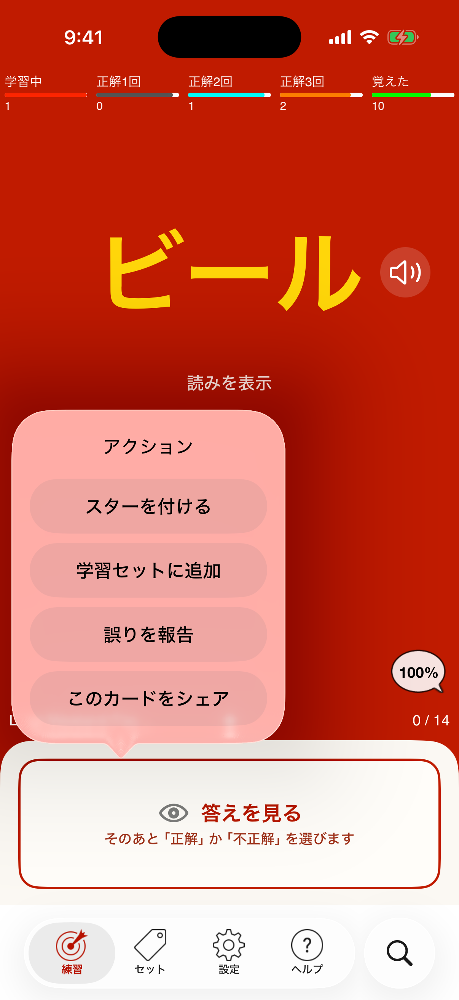

誤りの報告
間違っていると思うところを見つけたら、ぜひ教えてください。かんたんにすぐ送れます！
練習画面のアクションボタンをタップし、誤りを報告をタップします。

メールが開くので、詳しい内容を書いて送ってください。できるだけ多くの情報をお願いします！ 今後のバージョンでカードを直すようにします。
間違っていると思うところを見つけたら、ぜひ教えてください。かんたんにすぐ送れます！
練習画面のアクションボタンをタップし、誤りを報告をタップします。

メールが開くので、詳しい内容を書いて送ってください。できるだけ多くの情報をお願いします！ 今後のバージョンでカードを直すようにします。